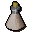
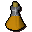

Jangerberries
| Config name | jangerberries |
| Item id | 247 |
| Weight | 7g |
| Members | Yes |
| Tradeable | Yes |
| Stackable | No |
| Options | eat |
| Defined in | scripts/skill_herblore/configs/brewing/potions_additives.obj |
Jangerberries
They don't look very ripe.
Show 4 ground spawns on the world map → Open in knowledge graph →
Used to make
| Skill | Level | XP | Ingredients | Tool | How | Where | Makes |
|---|---|---|---|---|---|---|---|
| Herblore | 78 | 175.0 |  Unfinished potion, | use on item |  Zamorak potion(3)members |
Dropped by
| NPC | Level | Quantity | Rarity | Via | Notes |
|---|---|---|---|---|---|
| 24 | 1 | 1/256 (0.39%) | |||
| 24 | 1 | 1/256 (0.39%) | |||
| 24 | 1 | 1/256 (0.39%) | |||
| 24 | 1 | 1/256 (0.39%) | |||
| 24 | 1 | 1/256 (0.39%) | |||
| 24 | 1 | 1/256 (0.39%) |
Ground spawns
| Area | Coordinates | Level | Count | Map |
|---|---|---|---|---|
| Gu'Tanoth | 2510, 3090 | 0 | 1 | view |
| Gu'Tanoth | 2512, 3080 | 0 | 1 | view |
| Gu'Tanoth | 2516, 3086 | 0 | 1 | view |
| Gu'Tanoth | 2517, 3082 | 0 | 1 | view |
Quests
Referenced in scripts
scripts/_test/scripts/cheats/cheat_bank.rs2scripts/areas/area_canifis/scripts/canafis_citizen.rs2scripts/player/scripts/consumption/consume.rs2scripts/quests/quest_itwatchtower/scripts/ogre_potion.rs2scripts/quests/quest_itwatchtower/scripts/watchtower_wizard.rs2scripts/skill_herblore/scripts/brewing/brew_potion.rs2